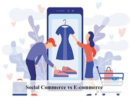

<div class="wrapper">
  <div class="content">
    <p>
      E-commerce (electronic commerce) is the activity of electronically buying
      or selling of products on online services or over the Internet. E-commerce
      draws on technologies such as mobile commerce, electronic funds transfer,
      supply chain management, Internet marketing, online transaction
      processing, electronic data interchange (EDI), inventory management
      systems, and automated data collection systems. E-commerce is in turn
      driven by the technological advances of the semiconductor industry, and is
      the largest sector of the electronics industry.
    </p>
    <p>
      The term was coined and first employed by Dr. Robert Jacobson, Principal
      Consultant to the California State Assembly's Utilities & Commerce
      Committee, in the title and text of California's Electronic Commerce Act,
      carried by the late Committee Chairwoman Gwen Moore (D-L.A.) and enacted
      in 1984. E-commerce typically uses the web for at least a part of a
      transaction's life cycle although it may also use other technologies such
      as e-mail. Typical e-commerce transactions include the purchase of
      products (such as books from Amazon) or services (such as music downloads
      in the form of digital distribution such as iTunes Store). There are three
      areas of e-commerce: online retailing, electronic markets, and online
      auctions. E-commerce is supported by electronic business. The existence
      value of e-commerce is to allow consumers to shop online and pay online
      through the Internet, saving the time and space of customers and
      enterprises, greatly improving transaction efficiency, especially for busy
      office workers, but also saving a lot of valuable time.
    </p>
    

    <p>
      Contemporary electronic commerce can be classified into two categories.
      The first category is business based on types of goods sold (involves
      everything from ordering "digital" content for immediate online
      consumption, to ordering conventional goods and services, to "meta"
      services to facilitate other types of electronic commerce). The second
      category is based on the nature of the participant (B2B, B2C, C2B and
      C2C). On the institutional level, big corporations and financial
      institutions use the internet to exchange financial data to facilitate
      domestic and international business. Data integrity and security are
      pressing issues for electronic commerce. Aside from traditional
      e-commerce, the terms m-Commerce (mobile commerce) as well (around 2013)
      t-Commerce have also been used.
    </p>
    
  </div>
</div>
